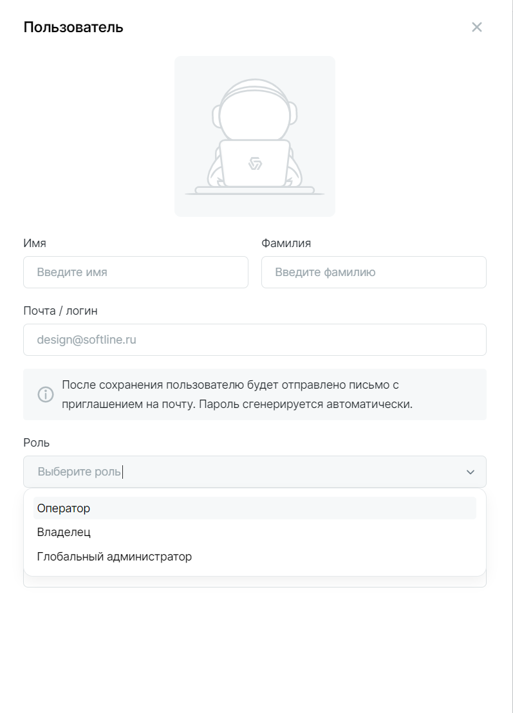

Начало работы
Подключение облаков
Подключите вашу приватную или публичную систему виртуализации к Clouder. После подключения будет запущен процесс сканирования ресурсов: сетей, машин и дисков.
Авторизуйтесь в Cloudmaster в роли Глобального администратора. Кликните на  в правом верхнем углу, выберите пункт Подключение к облакам и далее — необходимый вариант виртуализации.
в правом верхнем углу, выберите пункт Подключение к облакам и далее — необходимый вариант виртуализации.
Далее, все подключённые системы виртуализации будут иметь внутренний термин Облако Clouder.

Для каждой системы виртуализации будет предложено заполнить необходимые авторизационные данные.
После успешной аутентификации начнётся процесс сканирования инфраструктуры и загрузки виртуальных машин в раздел Ресурсы. Список виртуальных машин подгрузится в течение 5-10 мин.
Создание пользователей
В продукте реализована ролевая модель:
- Глобальный администратор — пользователь с максимальными правами и доступом ко всем настройкам, разделам и возможностям продуктам.
- Владелец — имеет права на управление Подписками и может создавать Заявки на создание, изменение, удаление и прочие операции с ними, а также управлять ВМ внутри Подписок и составом пользователей, имеющих доступ к ней.
- Оператор — пользователь, имеющий возможность создавать и управлять ВМ внутри доступной Подписки, у которых он является ответственным.
Глобальный администратор может управлять существующими пользователями и создать нового в разделе Пользователи и роли (

Новому пользователю на почту будет направлен временный пароль для доступа к Clouder. Пользователи могут самостоятельно изменить свой пароль, нажав на аватарку в правом верхнем углу. Пароль должен соответствовать требованиям сложности:
- не менее 8 символов
- наличие больших и маленьких букв
- наличие цифр
- наличие символов.
Создание новой подписки
Пользователи с правами Владелец или Глобальный администратор могут создавать Подписки с квотами ресурсов.
Внимание
Каждая Подписка относится только к одному к Облаку Clouder. Т.е. нельзя объединить ресурсы или объемы из разных подключений.
Создайте Заявку с соответствующим типом в разделе Заявки и укажите нужные объемы квоты ресурсов.

Глобальный администратор получит Заявку и сможет ее согласовать или отклонить. Если заявка согласована, Подписка будет создана и отобразится в разделе Подписки.
Глобальный администратор должен добавить в подписку сети, в которых разрешено создавать ВМ. Добавить сеть можно в карточке подписки во вкладке Сети.

Важно
Добавьте в подписку сети, чтобы пользователи могли создавать машины. Проверьте соблюдение следующих условий:
-
сеть должна быть активна в разделе Ресурсы -> Сети,
-
сеть должна присутствовать в облаке Clouder, на основе которого, создана подписка.
Настройка подписки
После согласования заявки Владелец подписки увидит подписку в разделе Подписки. В карточке подписки Владелец может добавить Операторов, из числа пользователей тенанта Cloudmaster. Операторы, добавленные в подписку смогут использовать квоты ресурсов для создания ВМ. Добавление производится во вкладке Операторы.
Внимание
Убедитесь, что в подписке есть сети. Добавить сеть для создания машин может только Глобальный администратор. Без сети машины создаваться не будут.
Изменение подписки
Квоту в Подписке можно увеличть или уменьшить. Изменение производится через заявку с типом Изменение квоты подписки.
После рассмотрения и согласования Заявки Глобальным администратором в Подписке изменится квота ресурсов, доступная для создания новых и изменения прежних ВМ.
Внимание
Изменение квоты производится с учетом установленных лимитов и текущего распределения ресурсов в облаке. Если лимит по какому-либо ресурсу исчерпан, система не даст увеличить квоту. Лимиты устанавливливаются при подключении облака.
Удаление Подпискипроизводится через Заявку с типом Удаление подписки.
Внимание
Удалить можно только пустую Подписку, в которой нет ресурсов.
Удалить ВМ можно из карточки ВМ, кликните на . Также ВМ можно переместить в другую доступную Подписку через заявку Передача ресурсов из подписки в подписку.
Заявка на перемещение может относиться ко всем ВМ в подписке: укажите Подписку-источник, кликните + Ресурсы, выбрать все ВМ, а также указать Подписку-назначение.
Создание ВМ
Пользователь может создать ВМ только в тех Подписках, которые доступны пользователю. А также при условии доступности свободных ресурсов в подписке. Определить сколько ресурсов доступно можно по статус барам в карточке Подписки.
ВМ можно создать с пользовательской конфигурацией или использовать подготовленный Глобальным администратором Шаблон.
Создание ВМ занимает некоторое время. Когда машина будет создана, в Уведомлениях (колокольчик справа вверху), появится соответствующее сообщение.
Изменение существующих ВМ
В разделе Ресурсы -> Виртуальные машины пользователь может видеть список, доступных ему ВМ. При клике на строку открывается карточка ВМ.
Для редактирования параметров CPU, RAM, Сети - нажмите карандаш в углу карточки.
Для изменения/удаления диска, наведите на виджет с ним и нажмите и выберите действие — Удалить или Оптимизировать.
Запуск и остановка ВМ также производятся через карточку (кнопка справа в углу).
Для каждой ВМ можно назначить Ответственного. Это пользователь, который будет иметь доступ к управлению и изменению ВМ. Выбирается из Операторов, добавленных в выбранную Подписку.
Как назначить ответственного за ВМ
Перейдите в раздел Подписки. Откройте карточку подписки, где находится ВМ. Во вкладке Ресурсы в карточке машины выберите чекбоксом необходимые ВМ. Нажмите на Назначить ответственного.
Ответственный назначается автоматически, при создании ВМ. В дальнейшем его можно изменить.
Подключение к ВМ
К виртуальной машине можно подключиться прямо из браузера, выбрав вкладку Консоль в карточке ВМ и нажав Подключиться. Доступно подключение по RDP или через SSH.
Для корректной работы подключения к ВМ необходимо дополнительно настроить корректную сетевую связность. Обратитесь к команде Cloudmaster за деталями.